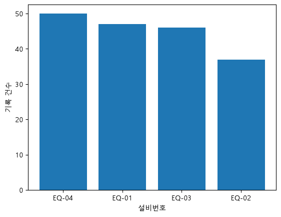
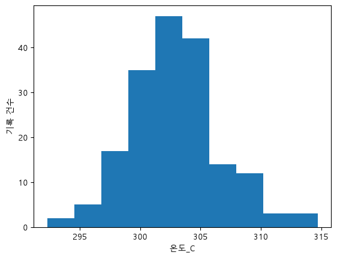
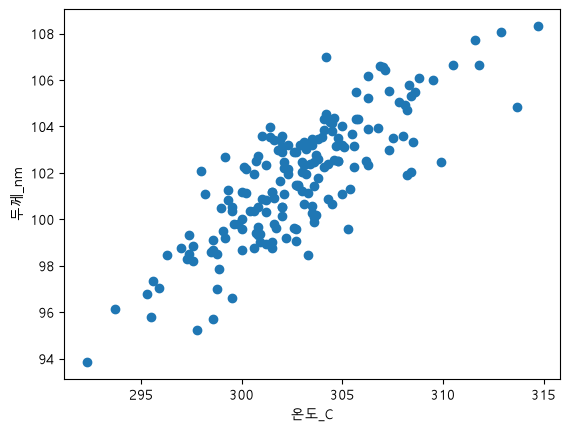

그래프로 공정 상태 이해하기 — 실습지
모든 문제는 공정 기록 week06_process_visualization.csv(180행 10열, 교육용 가상 데이터)로 푼다.
공정 지도 위치: ②~⑤ + 세정 설비 기록. 설비 4대가 여러 공정 기록을 함께 남겼다(교육용 가상 기록). 문제 1~3은 오늘의 미션 그래프 3장이고, 학생용 노트북 6단계의 ____와 같다 — 노트북 1단계와 5단계 셀을 먼저 실행해 plt와 df를 만들어 둔다.
문제 1 — 설비별 기록 건수 막대그래프 (노트북 6단계 문제 1)
설비마다 기록이 몇 건인지 세고 막대로 그리자. 힌트: 강의 "반도체 데이터로 확인하기" 확인 1의 공정명 막대와 같은 모양이다. 세는 열만 설비번호로 바뀐다.
# TODO: 값마다 개수를 세는 함수 이름을 채우세요.
eq_counts = df["설비번호"].____()
print(eq_counts)
# TODO: 막대그래프를 그리는 함수 이름을 채우세요.
plt.____(eq_counts.index, eq_counts)
plt.xlabel("설비번호")
plt.ylabel("기록 건수")
plt.show()기록이 가장 많은 설비와 가장 적은 설비는? 각각 몇 건인가?
value_counts, bar
설비번호 EQ-04 50 EQ-01 47 EQ-03 46 EQ-02 37 Name: count, dtype: int64

막대는 많은 순(EQ-04, EQ-01, EQ-03, EQ-02)으로 놓인다. 가장 많은 설비는 EQ-04(50건), 가장 적은 설비는 EQ-02(37건)다. 설비마다 기록 수가 다르다는 점은 7차시에 비율로 비교할 때 다시 쓴다.문제 2 — 온도가 몰린 구간(히스토그램) (노트북 6단계 문제 2)
공정 기록 180건의 온도가 어느 구간에 몰려 있는지 그리자. 힌트: 강의 확인 2의 두께 히스토그램과 같은 모양이다(bins=10). 그릴 열만 "온도_C"로 바뀐다. 열 이름은 따옴표 안에 쓴다 — 따옴표를 빠뜨리면 NameError: name '온도_C' is not defined가 난다.
# TODO: 히스토그램 함수 이름과 그릴 열 이름을 채우세요.
plt.____(df[____], bins=10)
plt.xlabel("온도_C")
plt.ylabel("기록 건수")
plt.show()가장 높은 막대는 대략 몇 도 근처인가? 그림 모양을 한 줄로 적자.
hist, "온도_C"

온도는 약 292~315℃ 사이에 있고, 가장 높은 막대는 약 300~305℃ 근처다. 가운데가 높고 양쪽으로 갈수록 낮아지는 산 모양이다. (참고:plt.hist가 나눈 구간으로는 301.3~303.5℃ 구간이 47건으로 가장 많다. 그림 눈금으로는 "약 300~305℃"까지 읽으면 된다.)
"두께_nm"을 그린 것이다. 오류가 나지 않아 놓치기 쉽다. 온도 히스토그램이면 눈금이 약 292~315다.
문제 3 — 온도와 두께의 관계(산점도) (노트북 6단계 문제 3)
온도가 높은 기록일수록 막 두께도 달라지는지 그리자. 힌트: 강의 확인 3의 온도-압력 산점도와 같은 모양이다. x = 온도_C는 그대로, y축 열만 두께_nm로 바뀐다.
# TODO: 산점도 함수 이름과 y축에 놓을 열 이름을 채우세요.
plt.____(df["온도_C"], df[____])
plt.xlabel("온도_C")
plt.ylabel("두께_nm")
plt.show()점들은 어느 쪽으로 기울었나? 강의 확인 3의 온도-압력 산점도와 무엇이 다른가?
scatter, "두께_nm"

점들이 오른쪽 위로 올라가는 띠 모양이다 → 온도가 높은 기록일수록 두께도 두꺼운 경향이 보인다. 온도-압력 산점도는 한쪽으로 기울지 않은 구름이었다. 함께 움직인다는 것까지가 그림이 보여 주는 것이다. 왜 그런지는 그림만으로 정하지 않는다(8차시).온도_C, y = 두께_nm).
그래프 위에 Text(0, 0.5, '두께_nm') 줄이 보이면 plt.show()를 빠뜨린 것이다. Orange PART 2의 온도-두께 Scatter Plot 화면과 같은 모양인지도 비교한다.
문제 4 — Orange 상자 그림으로 설비별 온도 퍼짐 비교하기
Orange3에서 키트의 orange3/week06/week06_2_process_start.ows를 연다. 강의 PART 2 "반도체 — 공정 기록을 Orange로 그리기"의 3단계다.
- 왼쪽 Visualize 묶음에서
Box Plot을 끌어 와 File과 잇고 더블클릭한다. - 왼쪽 위 Variable 목록에서
온도_C를 클릭한다(처음에는측정시간으로 잡혀 있다). - 그 아래 Subgroups 목록에서
설비번호를 클릭한다(처음에는합격여부로 잡혀 있다). 상자 네 개(EQ-01~EQ-04)가 나오면 된다. - 상자마다 위 숫자(평균 ± 표준편차)와 아래 숫자 세 개(상자 왼쪽 끝 · 중앙값 · 상자 오른쪽 끝)를 읽는다.
| 읽을 것 | 내 답 |
|---|---|
| 네 설비의 평균 온도(상자 위 숫자)는 몇 도에서 몇 도 사이인가 | ( ) ~ ( ) |
| 상자가 가장 긴 설비 | ( ) |
| 그 설비 상자의 왼쪽 끝 ~ 오른쪽 끝 | ( ) ~ ( ) |
문제 1의 파이썬 막대그래프에서 이 설비는 기록 수가 몇 번째였나? 막대그래프와 상자 그림이 각각 무엇을 보여 주는지 한 줄로 비교하자.

설비번호로 바꾸지 않은 것이다. 상자가 다섯 개면 Subgroups에서 공정명을 고른 것이다. 상자 아래 숫자가 온도(300 안팎)가 아니면 Variable을 온도_C로 바꾸지 않은 것이다. 상자 대신 색 띠가 보이면 Variable에서 글자 열을 고른 것이다 — 온도_C를 다시 클릭한다.
위젯은 Data Table이 아니라 File에 잇는다. 막히면 같은 폴더의 week06_2_process_done.ows를 연다.
문제 5 — 해석 문장 쓰기
오늘의 질문 "숫자 표로는 안 보이던 공정의 모습을, 그래프 몇 장으로 볼 수 있을까?"에 문제 4의 숫자로 답하자.
모든 빈칸을 문제 4에서 읽은 숫자로 채운다.
판단해 보기 — 이 상자 그림만으로 "EQ-02 설비 때문에 불량이 생긴다"고 말할 수 있을까? 한 줄로 이유를 적자.
판단 예시: "말할 수 없다. 상자 그림은 온도가 얼마나 퍼졌는지만 보여 준다. 설비마다 불합격이 얼마나 되는지는 아직 세어 보지 않았고(7차시), EQ-02 기록은 37건으로 가장 적다."